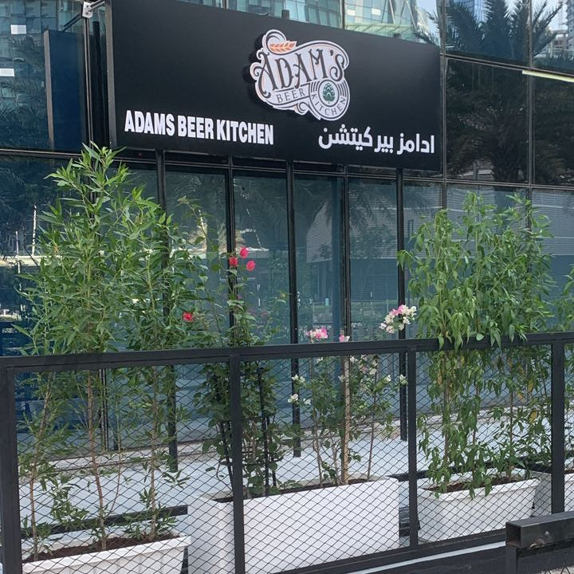

Ten steps from the footbridge
We're on the ground floor of The Arc, Tower C, in Shams Gate District. Here's how to find us the first time.
Open from 12PMHappy hour every day
First time here?
Head for The Arc
It's in Shams Gate District on Al Reem Island, on Bilshu'oum Street, next to Shams Boutik and the Gate Towers. Search "Adams Beer Kitchen Al Reem" in Google Maps.
Park up
There are a few spaces right out front. If they're taken, park at Shams Boutik and walk over the footbridge; it takes about two minutes.
Look for the planters
The sign is on the ground floor of Tower C, with plants out front. The beer garden is behind the fence.
Pick your side
Inside for the darts and the bar, outside for the string lights. Or both, in that order.

Opening hours
Shams Gate District, Al Reem Island, Abu Dhabi
Save your seat
Send us a WhatsApp and the team will confirm your table. Big group? Tell us and we'll set it up.